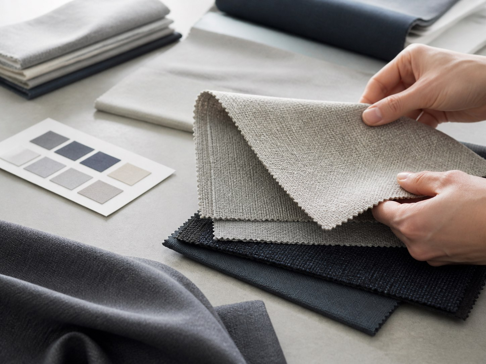
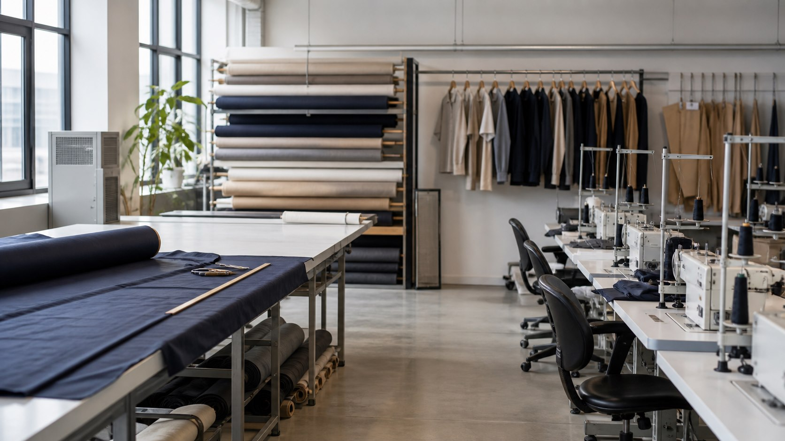
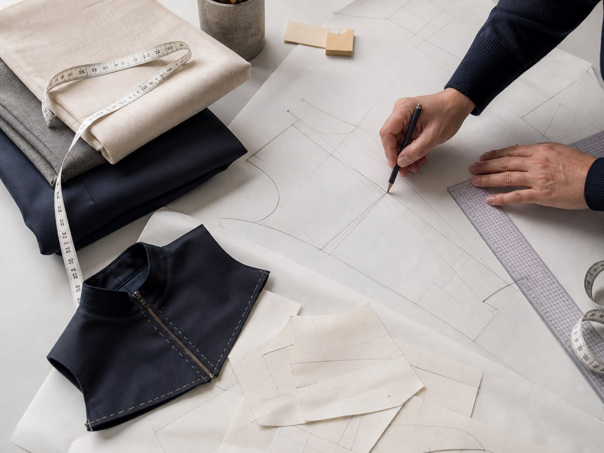
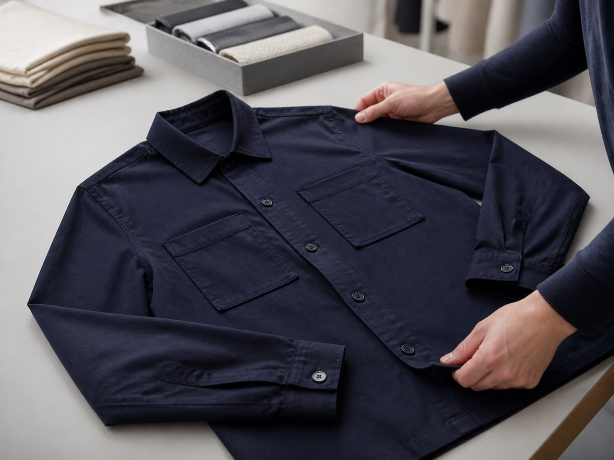
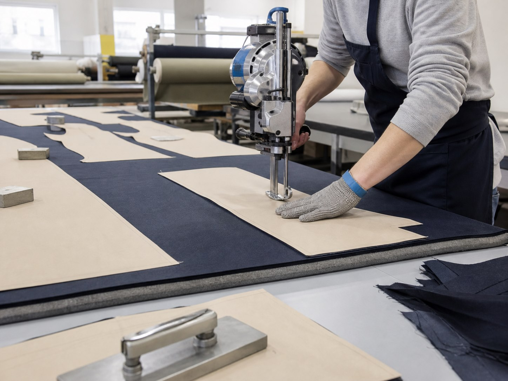
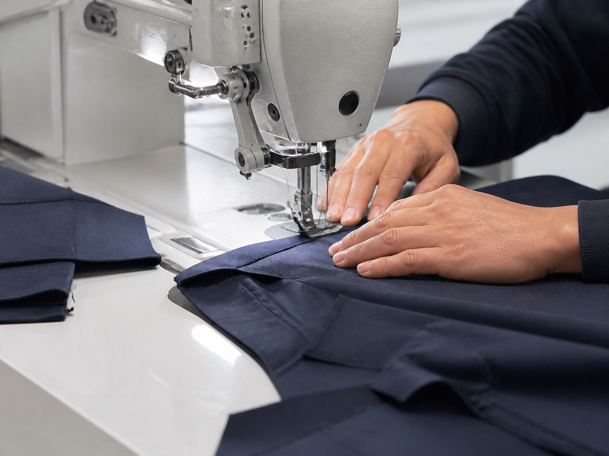
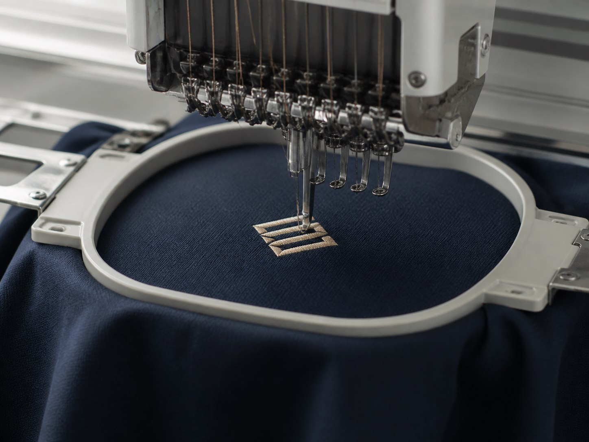
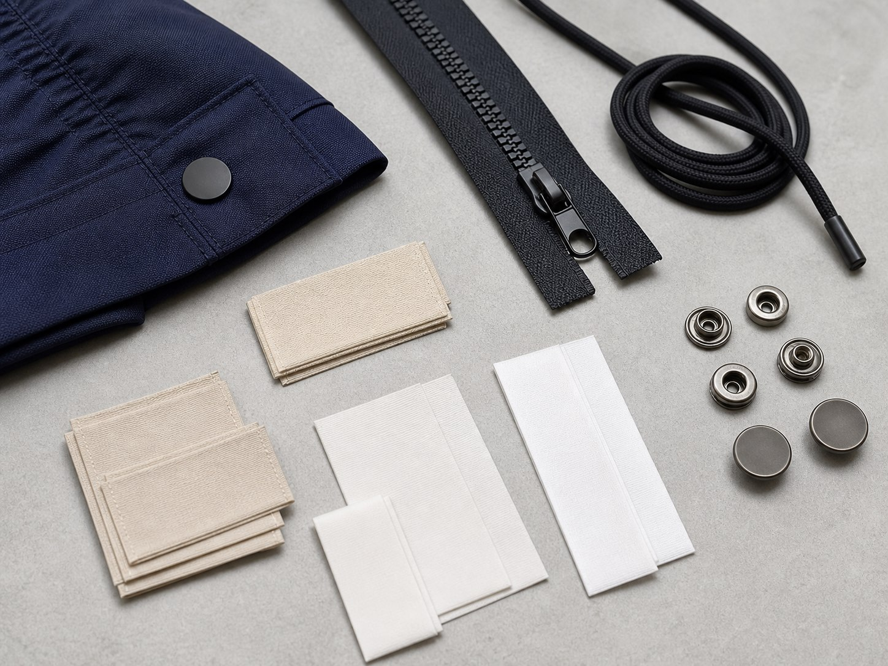
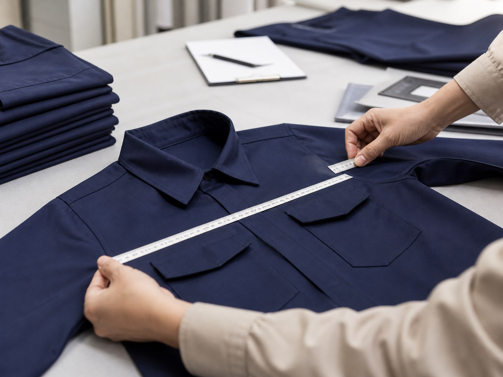
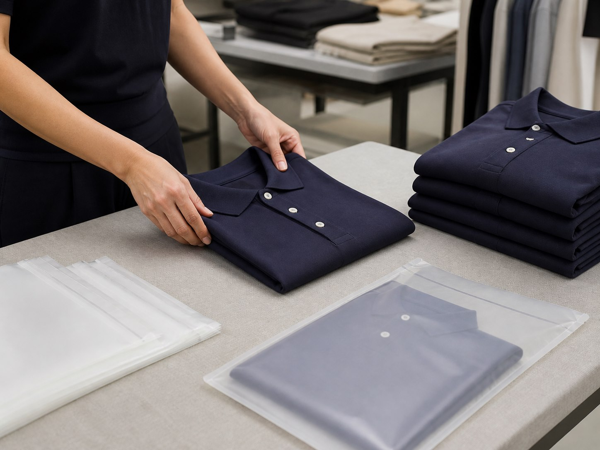

Kumaş Araştırması & Analizi
Kumaş seçenekleri ürünün modeli, dokusu ve kullanım alanına göre değerlendirilir.

Kumaş seçiminden son kontrole kadar temel üretim aşamaları.
Üretim Sürecini İncele
Kumaş seçenekleri ürünün modeli, dokusu ve kullanım alanına göre değerlendirilir.

Ölçüler, form ve model detayları kalıp üzerinde belirlenir.

İlk numune üzerinde kalıp, ölçü, kumaş ve uygulama detayları kontrol edilir.

Kumaş, onaylanan kalıp ve beden dağılımına göre kesilir.

Kesilen parçalar modele uygun dikiş uygulamalarıyla birleştirilir.

Uygulamanın konumu, ölçüsü ve görünümü ürüne göre belirlenir.

Etiket, fermuar, kordon, arma ve sallama kartı gibi detaylar modele eklenir.

Ölçü, dikiş, görünüm ve uygulama detayları kontrol edilir.

Ütü ve katlama sonrası ürünler sipariş düzenine göre paketlenir.
